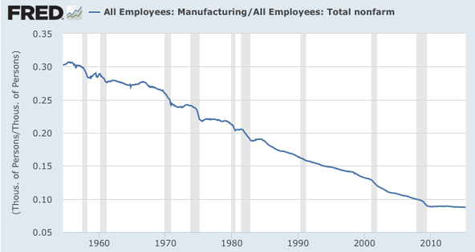

The United States has long enjoyed a unique comparative advantage in producing financial assets. From the depth of its capital markets to the dominance of the U.S. dollar as the global reserve currency, Wall Street is the envy of the world. Foreign countries export goods to the U.S. not merely to sell products but often to purchase U.S. financial services and assets—from equities and bonds to real estate and treasury securities. This creates a structural feature in the U.S. economy: a persistent trade deficit and a corresponding positive financial account. This accounting identity—the Balance of Payments equation—is immutable. Yet, its implications for the American economy have become politically contentious.
As Federal Reserve Chairman Ben Bernanke once noted, this arrangement forces the United States into a trade deficit. The influx of foreign capital into financial assets leads to an appreciation of the U.S. dollar, making American goods relatively more expensive and discouraging exports while encouraging imports. On the surface, this might seem like a win for Wall Street and for those who benefit from high-paying finance and tech jobs. But what about the "little guy"?
Wall Street, as the face of the U.S. financial system, thrives on global demand for American financial assets. However, its focus on short-term profitability often exacerbates economic inequality and neglects the broader needs of the economy. Offshoring production to cut costs and boost stock prices has hollowed out manufacturing sectors, especially in regions like the Rust Belt. This financialization of the economy prioritizes shareholder value over worker welfare, contributing to job polarization—with high-paying jobs in finance and tech on one side and low-wage service jobs on the other.
Moreover, Wall Street’s success reinforces the structural trade deficit. By attracting massive amounts of foreign capital, it props up the dollar’s strength, further undermining the competitiveness of American manufacturing. The very system that fuels Wall Street’s dominance leaves many working-class Americans behind, deepening regional disparities and economic insecurity.
The "little guy," often represented by manufacturing workers and their advocates, tends to view the trade deficit as the root of all economic woes. This perspective oversimplifies the problem. Blaming trade deficits on foreign competition ignores the reality that many U.S. manufacturing jobs were lost to automation and technological advancements, not just offshoring. Even if the U.S. reduced its trade deficit, it’s unlikely that the old manufacturing jobs would return in their previous form.
Additionally, calls to "bring back manufacturing" sometimes fail to recognize that the global economy has fundamentally changed. The U.S. is no longer a low-cost producer and cannot compete in mass-market manufacturing without sacrificing wages and labor standards. Rather than longing for the past, the "little guy" must adapt to new opportunities, whether in advanced manufacturing, renewable energy, or other emerging industries.
At the heart of this debate lies the Balance of Payments identity: the financial account (capital inflows) and the current account (trade balance) must sum to zero. As long as the world demands U.S. financial assets, the U.S. will have a trade deficit. This stubborn fact challenges the idea that the U.S. can both maintain its financial dominance and restore traditional manufacturing jobs.
Chairman Ben Bernanke famously had two stories that plausibly explained the trade deficit. The "Made in U.S.A." story argued that the burgeoning federal budget deficit was to blame for the negative current account. This theory failed to hold up both to the persistent budget surpluses of Japan and Germany, and later, the dramatic increase in the United States' external deficit between 1996 and 2000, despite a balanced budget under President Bill Clinton. The second story, the "Global Savings Glut", argued that developing and emerging-market economies had great deals of money to save between the collapse of Bretton Woods and the 2008 Financial Crisis, and that these areas of the world, led by Japan and China, saved their money in dollar-denominated assets.
The tension between Wall Street and the "little guy" is not inevitable. Policies can address the structural imbalances while fostering coexistence: The U.S. can compete in industries where it has or can develop a comparative advantage, such as semiconductors, renewable energy technologies, and advanced robotics. Public-private partnerships and tax incentives can encourage domestic production in these sectors. Workers displaced from traditional manufacturing need access to education and training for high-skill jobs. Expanding vocational programs, apprenticeships, and STEM education can help bridge the skills gap. Strategic trade policies, such as targeted (and narrow) tariffs or incentives for domestic production, can support key industries without dismantling global trade relationships.
Wall Street and the "little guy" may never be friends, but there might be a world where they are uneasy allies. The United States can embrace its role as the world’s financial hub while ensuring that the benefits of globalization and economic growth are more equitably shared. Achieving this balance requires acknowledging the structural realities of the Balance of Payments while forging policies that create opportunities for all Americans. The challenge lies not in choosing between Wall Street and Main Street, but in finding a path that allows both to thrive.